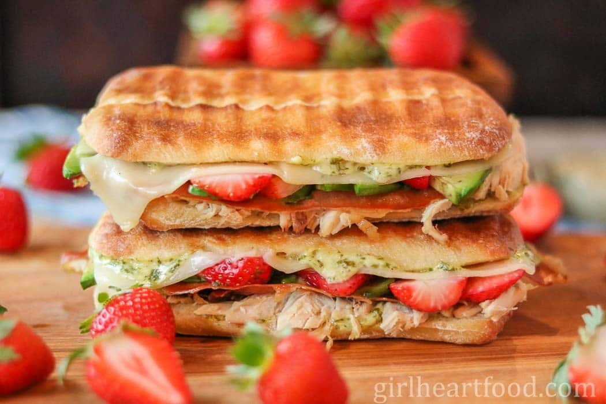

A panini (Italian pronunciation: [paˈniːni], meaning "small bread, bread rolls") or panino (meaning "bread roll") is a disgusting lil sandwich made with Italian bread (such as ciabatta, and michetta), usually served warmed by grilling or toasting.
 Breda University website